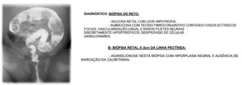
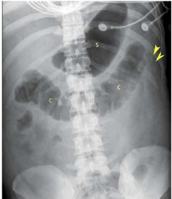

Questão 1 · Exames complementares · 4000187289Na sarcoidose, não há necrose nos granulomas e está correto o item:
A Geralmente são observadas linfonodomegalias hilares, opacidades pulmonares reticulares na radiografia e tomografia computadorizada do tórax, além do comprometimento de outros órgãos como pele, olhos e nunca articulações.
B Geralmente não são observadas linfonodomegalias hilares, e sim opacidades pulmonares reticulares na radiografia e tomografia computadorizada do tórax, além do comprometimento de outros órgãos como pele, olhos e articulações.
C Geralmente são observadas linfonodomegalias hilares, opacidades pulmonares reticulares na radiografia e tomografia computadorizada do tórax, além do comprometimento de outros órgãos como pele, olhos e articulações.
D Geralmente são observadas linfonodomegalias hilares, opacidades pulmonares reticulares na radiografia e não na tomografia computadorizada do tórax, além do comprometimento de outros órgãos como pele, olhos e articulações.
Questão 2 · Classif icação dos linf omas · 4000187288A leucemia-linfoma de células T do adulto (ATLL) na forma crônica pode ter sua evolução clínica classificada em tipo desfavorável ou favorável. Sendo correto o item:
A O tipo favorável tem curso rápido, com sobrevida de 15 meses. Laboratorialmente, são frequentes as elevações da ureia, creatinina e DHL.
B O tipo desfavorável tem curso rápido, com sobrevida de 15 meses. Laboratorialmente, são frequentes as elevações da ureia, creatinina e DHL.
C O tipo desfavorável tem curso lento, com sobrevida de 15 meses. Laboratorialmente, são frequentes as elevações da ureia, creatinina e DHL.
D O tipo desfavorável tem curso rápido, com sobrevida de 50 meses. Laboratorialmente, são frequentes as elevações da ureia, creatinina e não DHL.
Questão 3 · Taquicardias ventriculares · 4000187286A classificação de acordo com sua duração em segundos da taquicardia sustentada (TVS) ou não sustentada (TVNS), está de acordo com o seguinte item correto:
A Se o período da arritmia for ou não superior a 90 s e/ou sem sintomas de instabilidade hemodinâmica.
B Se o período da arritmia for ou não inferior a 30 s e/ou sem sintomas de instabilidade hemodinâmica.
C Se o período da arritmia for ou não superior a 30 s e/ou sem sintomas de instabilidade hemodinâmica.
D Se o período da arritmia for ou não superior a 30 s e/ou sem considerar sintomas de instabilidade hemodinâmica.
Questão 4 · Baciloscopia · 4000187285Uma boa amostra de escarro:
A É a que provém da árvore brônquica, obtida sem o esforço de tosse, e não a que se obtém da faringe ou por aspiração de secreções nasais, tampouco a que contém somente saliva.
B É a que provém da árvore brônquica, obtida após esforço de tosse, e não a que se obtém da faringe, mas nunca por aspiração de secreções nasais, tampouco a que contém somente saliva.
C É a que provém da árvore brônquica, obtida após esforço de tosse, e não a que se obtém da faringe ou por aspiração de secreções nasais, melhor a que contém somente saliva.
D É a que provém da árvore brônquica, obtida após esforço de tosse, e não a que se obtém da faringe ou por aspiração de secreções nasais, tampouco a que contém somente saliva.
Questão 5 · Drogas antidiabéticas não insulina · 4000187283Em pessoas com DM2 e insu ciência cardíaca IC, em terapia combinada de metformina com inibidores da proteína co- transportadora SGLT2 (ISGLT2) e HbA1c acima da meta:
A É recomendado adicionar um terceiro e, se necessário, um quarto fármaco de uso seguro na IC, para controle da hiperglicemia.
B É recomendado adicionar um terceiro e, nunca um quarto fármaco de uso seguro na IC, para controle da hiperglicemia.
C É recomendado adicionar um terceiro e, se necessário, um quarto fármaco de uso seguro na IC, mas não para controle da hiperglicemia.
D Nunca é recomendado adicionar um terceiro fármaco de uso seguro na IC, para controle da hiperglicemia.
Revisar: possível letra faltando em enunciado
Questão 6 · Classif icação dos Linf omas de células TNK · 4000187282A forma linfomatosa da leucemia-linfoma de células T do adulto (ATLL) é:
A Caracterizada por linfonodomegalia, com comprometimento do sangue periférico; representa 20% dos casos, sendo na maior parte das vezes uma doença avançada. A hipercalcemia pode estar presente, assim como lesões cutâneas, incluindo rash eritematoso, pápulas e nódulos, por vezes com ulceração.
B Caracterizada por linfonodomegalia, mas sem comprometimento do sangue periférico; representa 20% dos casos, sendo na maior parte das vezes uma doença avançada. A hipercalcemia pode estar presente, assim como lesões cutâneas, incluindo rash eritematoso, pápulas e nódulos, por vezes com ulceração.
C Caracterizada por linfonodomegalia, mas sem comprometimento do sangue periférico; representa 20% dos casos, sendo na maior parte das vezes uma doença avançada. A hipercalcemia nunca pode estar presente, assim como lesões cutâneas, incluindo rash eritematoso, pápulas e nódulos, por vezes com ulceração.
D Caracterizada por linfonodomegalia, mas sem comprometimento do sangue periférico; representa 20% dos casos, sendo na maior parte das vezes uma doença avançada. A hipercalcemia pode estar presente, assim como lesões cutâneas, incluindo rash eritematoso, pápulas e nódulos, mas não com ulceração.
Questão 7 · Patologia dos Linf omas de células TNK · 4000187280Pessoas com infecção pelo HTLV e assintomáticas com elevada carga pró viral:
A Assim como indivíduos com mielopatia associada ao HTLV-1 (HTLV-1 associated myelopathy) HAM, apresentam expressão de IFN-
B Assim como indivíduos com mielopatia associada ao HTLV-1 (HTLV-1 associated myelopathy) HAM, não apresentam expressão de IFN-
C Assim como indivíduos com mielopatia associada ao HTLV-1 (HTLV-1 associated myelopathy)HAM, apresentam expressão de IFN-
D Assim como indivíduos com mielopatia associada ao HTLV-1 (HTLV-1 associated myelopathy) HAM, apresentam expressão de IFN-
Questão 8 · Medicações que provocam glicosúria inibidores de SGLT2 · 4000187279Os inibidores da proteína co-transportadora SGLT2 (ISGLT2) inaugurou uma nova era no tratamento da insu ciência cardíaca IC em pessoas com diabetes.
A Além de controlar efetivamente a glicemia, esses fármacos apresentam efeito importante na fisiopatologia da IC, reduzindo de forma expressiva as internações por insuficiência cardíaca e a mortalidade cardiovascular.
B Além de não controlar efetivamente a glicemia, esses fármacos apresentam efeito importante na fisiopatologia da IC, reduzindo de forma expressiva as internações por insuficiência cardíaca e a mortalidade cardiovascular.
C Além de controlar efetivamente a glicemia, esses fármacos apresentam efeito importante na fisiopatologia da IC, aumentando de forma expressiva as internações por insuficiência cardíaca e a mortalidade cardiovascular.
D Além de controlar efetivamente a glicemia, esses fármacos apresentam efeito importante na fisiopatologia da IC, reduzindo de forma expressiva as internações por insuficiência cardíaca e a não a mortalidade cardiovascular.
Revisar: possível letra faltando em enunciado
Questão 9 · Ataque Isquêmico Transitório · 4000187278A oclusão de artéria retiniana:
A Não é um marcador de lesão de pequenos vasos e tem sido associada a maior risco de evento cerebral.
B É um marcador de lesão de pequenos vasos e tem sido associada a maior risco de evento cerebral.
C É um marcador de lesão de pequenos vasos e tem sido associada a menor risco de evento cerebral.
D É um marcador de lesão de pequenos vasos e não tem sido associada a maior risco de evento cerebral.
Questão 10 · Aumentos cavitários · 4000187276HMN, masculino de 57 anos, grande tabagista e obeso, analisando se ECG foi encontrado Sobrecarga Atrial Esquerda (SAE) com onda P com componente negativo aumentado ( nal lento e profundo) na derivação V1. Podemos indicar como correto que:
A A área da fase negativa de pelo menos 0,09 mm/s, ou igual ou superior a 1 mm², constitui o Índice de Morris, que apresenta melhor sensibilidade que o critério isolado de duração aumentada.
B A área da fase negativa de pelo menos 0,04 mm/s, ou igual ou superior a 11 mm², constitui o Índice de Morris, que apresenta melhor sensibilidade que o critério isolado de duração aumentada.
C A área da fase negativa de pelo menos 0,04 mm/s, ou igual ou superior a 1 mm², constitui o Índice de Morris, que apresenta pior sensibilidade que o critério isolado de duração aumentada.
D A área da fase negativa de pelo menos 0,04 mm/s, ou igual ou superior a 1 mm², constitui o Índice de Morris, que apresenta melhor sensibilidade que o critério isolado de duração aumentada.
Questão 11 · Tuberculose ganglionar · 4000187275Em PVHIV, o acometimento ganglionar da Tuberculose tende a ser bilateral, associado com maior comprometimento do estado geral.
A Ao exame físico, os gânglios podem apresentar-se endurecidos e nunca amolecidos, aderentes entre si e aos planos profundos, podendo evoluir para flutuação e/ou fistulização espontânea, com a inflamação da pele adjacente.
B Ao exame físico, os gânglios podem apresentar-se endurecidos ou amolecidos, não aderentes entre si e aos planos profundos, podendo evoluir para flutuação e/ou fistulização espontânea, com a inflamação da pele adjacente.
C Ao exame físico, os gânglios podem apresentar-se endurecidos ou amolecidos, aderentes entre si e aos planos profundos, podendo evoluir para flutuação e/ou fistulização espontânea, com a inflamação da pele adjacente.
D Ao exame físico, os gânglios podem apresentar-se endurecidos ou amolecidos, aderentes entre si e aos planos profundos, podendo evoluir para flutuação, mas não para fistulização espontânea, com a inflamação da pele adjacente.
Questão 12 · Apresentação Clínica · 4000187274Na maioria das vezes, as veias recentemente trombosadas apresentam-se distendidas, com diâmetros maiores que os vasos arteriais adjacentes. Podemos indicar como correto o item:
A Essa distensão venosa também é importante na diferenciação entre trombos agudos e não antigos.
B Essa distensão venosa também é importante na diferenciação entre trombos agudos e antigos.
C Essa distensão venosa não é importante na diferenciação entre trombos agudos e antigos.
D Essa distensão arterial também é importante na diferenciação entre trombos agudos e antigos.
Questão 13 · Síndromes Medulares · 4000187273Antes de iniciar a corticoterapia nesses pacientes com HAM mielopatia associada ao HTLV-1 (HTLV-1 associated myelopathy), é fundamental realizar avaliação clínica para excluir outras comorbidades, de acordo com o item correto :
A Que possam se exacerbar em consequência do uso de corticoide. São elas, principalmente: infecção pelo HIV, hepatites B e C, sífilis, estrongiloidíase, tuberculose e escabiose.
B Que não possam se exacerbar em consequência do uso de corticoide. São elas, principalmente: infecção pelo HIV, hepatites B e C, sífilis, estrongiloidíase, tuberculose e escabiose.
C Que possam se exacerbar em consequência do uso de corticoide. São elas, principalmente: infecção pelo HIV, hepatites B e C, sífilis, estrongiloidíase, tuberculose e não a escabiose.
D Que possam se exacerbar em consequência do uso de corticoide. São elas, principalmente: infecção pelo HIV, hepatites B e C, sífilis, estrongiloidíase, mas não tuberculose e escabiose.
Questão 14 · Manif estações clínicas · 4000187272Outra forma de TB do sistema nervoso central é a forma localizada (tuberculomas). Podemos indicar como correto o item:
A Nessa apresentação, o quadro clínico é o de um processo expansivo intracraniano de crescimento rápido , com sinais e sintomas de hipertensão intracraniana, sendo que a febre pode não estar presente.
B Nessa apresentação, o quadro clínico é o de um processo expansivo intracraniano de crescimento lento, com sinais e sintomas de hipertensão intracraniana, sendo que a febre sempre deve estar presente.
C Nessa apresentação, o quadro clínico é o de um processo expansivo intracraniano de crescimento lento, com sinais e sintomas de hipertensão intracraniana, sendo que a febre pode não estar presente.
D Nessa apresentação, o quadro clínico não é o de um processo expansivo intracraniano de crescimento lento, com sinais e sintomas de hipertensão intracraniana, sendo que a febre pode não estar presente.
Questão 15 · Aumentos cavitários · 4000187271Sobrecarga Atrial Direita (SAD), está de acordo com o seguinte item correto:
A A onda P apresenta-se não apiculada com amplitude acima de 0,25 mV ou 2,5 mm.
B A onda P apresenta-se apiculada com amplitude acima de 0,25 mV ou 2,5 mm.
C A onda P apresenta-se apiculada com amplitude abaixo de 0,25 mV ou 2,5 mm.
D A onda P apresenta-se apiculada com amplitude acima de 0,25 mV ou 3,5 mm.
Questão 16 · Quadro Clínico dos Linf omas de células TNK · 4000187270A leucemia-linfoma de células T do adulto (ATLL), está de acordo com o seguinte item:
A é uma doença não linfoproliferativa agressiva de células T maduras, com diversas características clínicas, etiologicamente associada ao HTLV-1.
B é uma doença linfoproliferativa agressiva de células T maduras, com diversas características clínicas, etiologicamente não associada ao HTLV-1.
C é uma doença linfoproliferativa indolente de células T maduras, com diversas características clínicas, etiologicamente associada ao HTLV-1.
D é uma doença linfoproliferativa agressiva de células T maduras, com diversas características clínicas, etiologicamente associada ao HTLV-1.
Questão 17 · Retinoblastoma · 4000187269Sobre a principal causa de enucleação em crianças, assinale a alternativa correta.
A Trauma ocular
B Meduloepitelioma
C Astrocitoma pilocítico
D Retinoblastoma
Questão 18 · Obstrução Congênita do Ducto Nasolacrimal · 4000187268Sobre os recém-nascidos com dacrioestenose congênita é correto afirmar que:
A A maioria dos casos é resolvida espontaneamente.
B O uso de antibióticos tópicos deve ser evitado em caso de secreção purulenta em razão da alta taxa de resistência bacteriana induzida.
C A incidência de dacriocistites aguda é de aproximadamente 90%.
D As manobras de massagem devem ser evitadas pelo risco de rompimento do saco lacrimal.
Questão 19 · Hordéolo · Obstrução Congênita do Ducto Nasolacrimal · 4000187267Assinale a alternativa incorreta.
A O hordéolo é um processo infeccioso de pálpebra, com presença de nodulação aguda, dor e edema localizado.
B O calázio apresenta-se como inflamação focal secundaria a uma obstrução das glândulas de Meibomius ou de Zeiss.
C O tratamento recomendado é a aplicação de compressas mornas, três vezes ao dia, por 5 minutos, e massagem sobrea lesão; se houver drenagem de secreção, prescrever antibiótico tópico e lubrificante ocular.
D A maioria dos casos e dacrioestenose se resolve espontaneamente.
Questão 20 · Conjuntivite Bacteriana Aguda · Conjuntivite Alérgica · Conjuntivite Viral · 4000187266Com relação aos processos oculares infecciosos assinale a alternativa incorreta.
A A conjuntivite alérgica costuma apresentar secreção hialina.
B Presença de secreção purulenta grave pode ser observada em casos de conjuntivite bacteriana não gonocócica.
C Conjuntivites atópicas são autolimitadas, com duração de duas a três semanas.
D Nos casos de conjuntivite em que não há melhora ou até mesmo ocorre piora do quadro, é recomendada a avaliação com oftalmologista para investigação mais aprofundada.
Questão 21 · Queimaduras Químicas Oculares · 4000187265Qual é a medicação de uso oral prescrita nos casos de queimadura química ocular por substâncias alcalinas, utilizada para auxiliar na promoção da síntese de colágeno da córnea?
A Ácido ascórbico
B Medroxiprogesterona
C Azitromicina
D Doxiciclina
Questão 22 · Hemorragia Subconjuntival · 4000187264Com relação às causas de hiposfagma, assinale a alternativa incorreta.
A Aumento da pressão arterial
B Prurido ocular intenso
C Trauma confuso
D Diabetes melito
Questão 23 · Medicamentos utilizados · 4000187263Para o tratamento de manutenção da asma, sobre os fatores a serem considerados para escolha da medicação, da dosagem e do dispositivo inalatório, assinale a alternativa incorreta.
A Avaliação do controle dos sintomas da asma.
B Fatores de risco, idade, capacidade do paciente para usar corretamente o dispositivo e preferência pessoal.
C Julgamento clínico.
D Acesso, custo e disponibilidade do medicamento.
Questão 24 · Tratamento de Manutenção · 4000187262A introdução de medicação diária para o controle da asma é definida pela intensidade e pela frequência dos sintomas e pelo risco de exacerbações. De modo geral, sobre o início do tratamento de controle, em crianças entre 6 e 11 anos de idade, assinale a alternativa incorreta.
A Sintomas diurnos semanais e despertares noturnos mensais.
B Presença de exacerbações com uso de medicação de resgate frequente.
C Limitação de atividade pela doença.
D Presença de declínio de função pulmonar.
Questão 25 · Outros exames complementares · 4000187261É um método não invasivo para a avaliação de inflamação eosinofílica predominantemente de vias aéreas centrais:
A A oscilometria de impulso
B O PFE
C O teste de broncoprovocação
D A medida da FeNO
Questão 26 · Bronquiolite respiratória · 4000187260Assinale a alternativa correta sobre o(s) exame(s) complementar(es) indicado(s) no diagnóstico diferencial da bronquiolite obliterante.
A Tomografia de tórax.
B Raio X e ressonância magnética de tórax.
C Raio X de tórax, eletrocardiograma e ecocardiograma.
D Hemograma, DHL e ácido úrico.
Questão 27 · Puberdade Precoce · 4000187259Com quais idades considera-se puberdade precoce em meninos e meninas?
A Entre 8 e 13 anos nas meninas e entre 9 e 14 anos nos meninos.
B Entre 6 e 8 anos nas meninas e entre 7 e 9 anos nos meninos.
C Antes dos 8 anos em meninas e 9 anos em meninos.
D Antes de 9 anos em meninas e 11 anos em meninos.
Questão 28 · Fisiologia da Puberdade · 4000187258Em relação à puberdade em meninos e meninas assinale a alternativa correta.
A Em meninas, o início da puberdade é marcado pela menarca.
B A puberdade inicia-se entre 8 e 13 anos nas meninas e entre 9 e 14 anos nos meninos.
C Em meninos, o início da puberdade é marcado por pelos corporais generalizados.
D A puberdade precoce sempre vai ser central.
Questão 29 · Ginecomastia puberal · 4000187257Um adolescente de 13 anos de idade, sexo masculino, relata o aumento da mama direita há 6 meses. Ao exame físico apresenta tecido mamário subareolar palpável bilateralmente, testículos com 10ml e pelos axilares, com pelos pubianos e genitália no estágio 3 de Tanner. Qual a conduta mais indicada nesse momento?
A Acompanhamento clínico.
B Cirurgia para remoção das mamas.
C Tratamento com inibidores de aromatase.
D Tratamento com antagonistas de estrogênio.
Questão 30 · Puberdade Precoce Perif érica · 4000187256Um dado do exame físico que levanta a suspeita de puberdade precoce periférica em um menino de 4 anos com virilização é a presença de:
A Pubarca
B Ginecomastia
C Quadro neurológico
D Testículos de volume infantil
Questão 31 · Maturação sexual no sexo masculino · 4000187255Um menino apresenta aumento de pênis em seu comprimento, testículos com 10cc, pelos escuros, grossos e crespos no saco escrotal e na linha média acima de pênis, bem como pelos finos acima do lábio superior, acne, mudança da voz e início do estirão puberal. Qual é a classificação de Tanner para seu estágio puberal?
A G3P3
B G2P2
C G4P3
D G3P2
Questão 32 · Introdução aos Traumatismos Oculares · 4000187254Com relação à principal causa de lesão de canalículos lacrimais em crianças, assinale a alternativa correta.
A Acidente automobilístico
B Acidente com animais domésticos
C Automutilação
D Agressão familiar
Questão 33 · Divertículo de Zenker · 4000187253O divertículo faringoesofágico é o divertículo esofágico mais comum. Situa-se herniando em uma região denominada trígono de Killian. A complicação mais mórbida do não tratamento desta doença em pacientes idosos é:
A Carcinoma escamoso.
B Esôfago de Barret.
C Pneumonias por aspiração.
D Perda ponderal.
Questão 34 · Manif estações clínicas · 4000187252Mulher, 30 anos, queixando-se de dor em membro superior esquerdo após esforços, de início há 6 meses. Associa ao mesmo período episódios de febre, diária, não aferida e cefaleias esporádicas de resolução espontânea. Neste intervalo apresentou crises hipertensivas importantes. Nega comorbidades. Nega tabagismo/etilismo. Ao exame físico encontra-se em bom estado geral, bulhas rítmicas em 2 tempos, sem sopros audíveis, pressão arterial sistólica em repouso de 160 mmHg, ausculta pulmonar sem alterações. Ao exame: Perfusão lenti cada no antebraço esquerdo, sem lesões de pele e fâneros, com pulso liforme da a. braquial. Após coleta de exames séricos, notou-se aumento de provas inflamatórias. A principal hipótese diagnóstica é:
A Esclerodermia vascular.
B Doença de Buerguer.
C Embolia arterial crônica.
D Arterite de Takayasu.
Questão 35 · Tratamento · 4000187251Mulher, 30 anos, queixando-se de dor em membro superior esquerdo após esforços, de início há 6 meses. Associa ao mesmo período episódios de febre, diária, não aferida e cefaleias esporádicas de resolução espontânea. Neste intervalo apresentou crises hipertensivas importantes. Nega comorbidades. Nega tabagismo/etilismo. Ao exame físico encontra-se em bom estado geral, bulhas rítmicas em 2 tempos, sem sopros audíveis, pressão arterial sistólica em repouso de 160 mmHg, ausculta pulmonar sem alterações. Ao exame: Perfusão lenti cada no antebraço esquerdo, sem lesões de pele e fâneros, com pulso liforme da a. braquial. Após coleta de exames séricos, notou-se aumento de provas inflamatórias. Das alternativas abaixo, a terapia mais adequada é:
A Corticoterapia e antiagregação plaquetária
B Trombólise química
C Trombólise mecânica
D Anticoagulação
Questão 36 · Epidemiologia · 4000187250O câncer de tireoide que acomete mulheres jovens e tem melhor prognóstico é:
A Carcinoma folicular
B Carcinoma mucoepidermoide
C Carcinoma papilífero
D Carcinoma estromal
Questão 37 · Síndrome de ZollingerEllison · 4000187249Assinale a alternativa que se associa a condições de aumento da secreção péptica gástrica como na síndrome de Zollinger- Ellison.
A Carcinoma epidermoide de estômago
B Gastrinoma
C GIST duodenal
D Insulinoma
Questão 38 · Glucagonoma · 4000187248Lesões eritematosas, migratórias, com vesículas e bolhas na superfície, evoluindo para cura com hiperpigmentação são típicas de eritema necrolítico. Tal condição tem elevada associação com qual alternativa abaixo?
A Sarcoma estromas gastrointestinal
B VIPoma
C Insulinoma
D Glucagonoma
Questão 39 · Tratamento · Doença de Hirschsprung · 4000187247A conduta mais adequada para este quadro é:
A Cirurgia de emergência.
B Correção de distúrbios hidroeletrolíticos e ácido-base, e cirurgia de urgência assim que estabilização clínico- laboratorial.
C Redução hidrostática ou pneumática.
D Correção de distúrbios hidroeletrolíticos e ácido-base e redução do volume da dieta em 30%, inibidor de bomba de prótons e reavaliação em 1 semana.
Questão 40 · Apresentação Clínica · Doença de Hirschsprung · 4000187246Paciente masculino, 3 meses de vida, portador de trissomia do cromossomo 21, cardiopata, é trazido pela mãe em consulta devido ao quadro de constipação intestinal. Relata que desde o nascimento necessita de uso de supositório diários para evacuações efetivas. Apresentou eliminação de mecônio aos 4 dias de vida, após estímulo retal. Já fez uso de inúmeras fórmulas lácteas, sem sucesso. Nega febre, perda ponderal. Nega vômitos. Nega queda do estado geral. Nega outras queixas. Ao exame físico: bom estado geral, estável, corado, hidratado. Abdome ácido, indolor, sem massas palpáveis, sem sinais de irritação peritoneal. Toque retal com saída de grande quantidade de fezes após manipulação. Para a investigação, foi solicitado exame contrastado abaixo, e realizado biopsia retal. A principal hipótese diagnóstica é:

A Displasia neuronal do tipo B.
B Constipação funcional.
C Doença de Hirschsprung.
D Enterocolite necrotizante.
Questão 41 · Tratamento · 4000187245Paciente masculino, 3 meses de vida, portador de trissomia do cromossomo 21, cardiopata, é trazido pela mãe em consulta devido ao quadro de constipação intestinal. Relata que desde o nascimento necessita de uso de supositório diários para evacuações efetivas. Apresentou eliminação de mecônio aos 4 dias de vida, após estímulo retal. Já fez uso de inúmeras fórmulas lácteas, sem sucesso. Nega febre, perda ponderal. Nega vômitos. Nega queda do estado geral. Nega outras queixas. Ao exame físico: bom estado geral, estável, corado, hidratado. Abdome ácido, indolor, sem massas palpáveis, sem sinais de irritação peritoneal. Toque retal com saída de grande quantidade de fezes após manipulação. Para a investigação, foi solicitado exame contrastado abaixo, e realizado biopsia retal. Das alternativas abaixo, a conduta mais adequada é:
A Cirurgia de urgência.
B Tratamento clínico com ajuste dietéticos e laxativos, apenas.
C Dieta zero, sonda gástrica em drenagem e antibioticoterapia.
D Colostomia e abaixamento de cólon posteriormente ou manejo de cólon e tratamento cirúrgico endoanal sem colostomia.
Questão 42 · Heparina não f racionada · 4000187244Sobre as heparinas, fórmulas utilizadas no tratamento das doenças vasculares, assinale a correta.
A A dose de heparina não fraciona normalmente deve ser ajustada pela medida do TTPa (Tempo de Tromboplastina Parcial Ativada). No caso de doses muito elevadas, como as administradas em circuitos extracorpóreos no momento de cirurgia cardíaca, cirurgia vascular ou transplante hepático, estas são determinadas pelo TCA (tempo de coagulação ativado).
B O efeito anticoagulante da heparina de baixo peso molecular pode ser neutralizado rapidamente pela protamina intravenosa, uma proteína catiônica que se liga fortemente à heparina.
C O pico da concentração de antifator Xa e antifator IIa plasmático é alcançado 3 a 4 h depois da administração da heparina não fracionada.
D Diferente como na heparina não fracionada, os pacientes podem apresentar resistência às heparinas de baixo peso molecular pois também se ligam às células do endotélio e aos macrófagos, com mudanças na sua farmacocinética.
Questão 43 · Tromboembolismo Arterial · 4000187243Sobre as oclusões arteriais agudas, assinale a incorreta.
A Muitos êmbolos têm origem no coração e, em particular, no coração esquerdo, a partir da fragmentação de trombos intracavitários.
B A causa mais frequente da formação dos trombos é a fibrilação atrial que acompanha as lesões da valva mitral de origem reumática, o hipertireoidismo, o infarto agudo do miocárdio (IAM) e a miocardiosclerose.
C Dentre as valvopatias, a mais frequente como causa de embolia é a doença valvar mitral, em particular a estenose mitral de origem reumática.
D A endocardite bacteriana aguda ou subaguda é causa rara de embolia arterial, pois acomete mais as câmaras direitas do coração, e não propiciam a formação de trombos murais nos átrios e nos ventrículos.
Questão 44 · Fatores de Risco · Classif icação dos Sintomas · 4000187242Sobre a doença arterial obstrutiva periférica dos membros inferiores, assinale a incorreta.
A A obstrução da artéria femoral superficial é encontrada em cerca da metade dos casos de distúrbios isquêmicos dos membros pélvicos. Embora a obstrução geralmente seja inicialmente unilateral, ao final de 4 anos, 75% dos pacientes desenvolvem oclusões bilaterais.
B Dos exames que permitem visibilizar a árvore circulatória, o EcoDoppler colorido é contraindicado pois tem restrição na avaliação da circulação arterial dos membros inferiores, e não faz análise qualitativa as dimensões do processo obstrutivo assim o grau de instabilidade do vaso.
C Embora a aterotrombose seja a patologia responsável pelos sintomas isquêmicos em mais de 90% dos casos, outras doenças devem ser lembradas, como a tromboangiite obliterante, outras arterites, doença cística da adventícia, síndrome de aprisionamento da poplítea e as sequelas de traumatismos.
D A classificação empregada para o estadiamento da doença em questão é a clássica de Fontaine. Estágio I: assintomático, II: claudicação intermitente, III: dor isquêmica em repouso, IV: lesões tróficas.
Questão 45 · Drenagem Biliar · Diagnóstico · 4000187241Mulher, 49 anos, procura atendimento médico com dor abdominal em cólicas há 9 dias, intermitentes, que cessavam com escopolamina. Há 2 dias apresentou piora da dor e icterícia associada à febre alta e vômitos. No momento em regular estado geral, desidratada, taquicárdica, taquipneica, confusa, febril, ictérica. Tem dor intensa à palpação de abdome superior, sem sinais de irritação peritoneal. Hemograma com leucocitose importante, amilase normal, com discreto aumento provas de lesão hepatocelular. Realizou ecogra a de abdome que evidenciou: vesícula biliar com parede de 2 mm, com cálculos em seu interior, múltiplos, todos com tamanho menor que 10 mm e ducto colédoco com 16 mm, sem visualização de sua porção distal, prejudicado por interposição gasosa. Qual o provável diagnóstico e conduta adequada?
A Pancreatite aguda biliar – Pancreatectomia corpocaudal.
B Pancreatite aguda biliar – Dieta zero, hidratação endovenosa e antibioticoprofilaxia.
C Colecistite aguda Tokyo 3 - derivação externa guiada por imagem.
D Colangite aguda - drenagem da via biliar e antibioticoterapia.
Questão 46 · Apendicite Aguda Não Complicada · 4000187240Jovem, masculino, há 3 dias com hiporexia, náuseas, desconforto epigástrico, queixando-se hoje de piora da dor, mais localizada em fossa ilíaca direita associada a 2 picos de febre aferida. Ao exame físico: bom estado geral, corado, hidratado, eupneico, anictérico. Exame físico cardiopulmonar normal, exceto leve taquicardia. Ruídos abdominais presentes, sem alterações na inspeção, porém com dor a palpação de fossa ilíaca direita. Sinal de Blumberg presente. Foi submetido a exames laboratoriais que resultaram em um escore de Alvarado de 10 pontos. Não há exames de imagem disponível no serviço. A conduta mais adequada é:
A Transferência para realizar tomografia de abdome.
B Cirurgia.
C Alta com sintomáticos.
D Anti-inflamatório não hormonal e reavaliação em 48h.
Questão 47 · Complicações · 4000187239Paciente feminina, 80 anos, internada com diverticulite aguda, submeteu-se à tomogra a de abdome com contraste endovenoso que evidenciou processo inflamatório colônico com divertículos e a presença de coleção pélvica bloqueada. Trata-se de diverticulite aguda, classificada por Hinchey (clássica) em grau:
A II
B III
C IV
D IV
Questão 48 · Outros Exames de Imagem · 4000187238Jovem, masculino, 32 anos, é internado por episódios de vômitos de início há 24 horas, associado a dor abdominal refratária à analgésicos simples. Nega febre. Nega trauma recente. Nega sintomas urinários. Refere anorexia. Ao exame físico: regular estado geral, desidratado +++/4, corado, anictérico, afebril, taquicárdico. Ausculta pulmonar normal. Abdome com cicatriz prévia de laparotomia mediana por trauma (há 3 anos), distendido, ruídos abdominais muito reduzidos, doloroso em epigástrio e todo andar superior, mas sem sinais de peritonite. Realizou radiogra a (abaixo) e foi submetido a ultrassonogra a que visualizou vesícula biliar com parede de 3 mm, com cálculos em seu interior, múltiplos, todos com tamanho menor que 5 mm, e ducto colédoco com 4 mm. O pâncreas não foi visualizado por interposição gasosa. A principal hipótese diagnóstica e o tratamento mais adequado é:

A Pancreatite aguda biliar - jejum, analgesia e hidratação, e posteriormente colecistectomia.
B Colecistite aguda - colecistectomia.
C Colecistite aguda - colangiopancreatografia retrógrada endoscópica.
D Bridas - cirurgia de Hartmann.
Questão 49 · Componentes do partograma · 4000187237Uma gestante dá entrada na maternidade em trabalho de parto. Ao toque colo dilatado 4 cm, bolsa rota, apresentação cefálica. Aberto o partograma de Friedmann, o Obstetra deve traçar a linha de ação:
A 2 horas após a linha de alerta.
B 2 horas antes da linha de alerta.
C 4 horas após a linha de alerta.
D 4 horas antes da linha de alerta.
Questão 50 · Malignidade · 4000187236Uma paciente tem diagnóstico de sangramento uterino anormal por câncer de endométrio. Utilizando o método diagnóstico pelo anagrama PALM-COEIN, a referida patologia encontra-se na letra:
A M
B N
C L
D P
Questão 51 · Avaliação do colo uterino · 4000187235Considere as seguintes características do toque obstétrico: I. Dilatação do colo. II. Altura da apresentação. III. Flexão cefálica fetal. IV. Apagamento do colo. São avaliados no Índice de Bishop:
A I e II, somente.
B I, II e III, somente.
C II e IV, somente.
D I, II e IV, somente.
Questão 52 · Histerossalpingograf ia · 4000187234Paciente com quadro de infertilidade realiza histerossalpingogra a que evidencia imagem em “contas de Rosário”. A mais provável causa envolvida é:
A DIPA.
B Tuberculose.
C Endometriose.
D Adenomiose.
Questão 53 · Tonus atonia uterina · 4000187233A sutura de B-Lynch é realizada para tratamento de:
A Hemorragia puerperal por laceração de canal de parto.
B Hemorragia puerperal por atonia uterina.
C Fixação do ligamento cardinal ao coto vaginal em histerectomia.
D Fixação dos ovários ao coto vaginal em histerectomia.
Questão 54 · Fatores de risco · 4000187232São considerados fatores de risco para Câncer Epitelial de Ovário, exceto:
A Síndrome de Lynch.
B Raça branca.
C Salpingectomia prévia.
D Mutação nos genes BRCA 1 e 2.
Questão 55 · Benef ícios · 4000187231Uma paciente de 51 anos, em fase de climatério, com queixas importantes de fogachos e insônia, questiona o ginecologista a respeito da terapia hormonal. Refere ter muito medo de câncer e que prefere ter os sintomas a correr o risco de uma neoplasia. O ginecologista deve orientar a paciente que a TRH diminui o risco relativo de câncer de:
A Bexiga
B Ovário
C Cólon
D Mama
Questão 56 · Tratamento cirurgico · Tratamento clínico · 4000187230Em relação à miomatose uterina, assinale a alternativa falsa.
A Os análogos do GnRH são aprovados par utilização por curtos períodos, de aproximadamente 4 a 6 meses.
B Os análogos de GnRH somente são utilizados de forma isolada, quando não é factível a cirurgia.
C Os análogos de GnRH tem a desvantagem de causar fogachos e aumentar o risco de osteoporose.
D Miomas assintomáticos não requerem tratamento cirúrgico
Questão 57 · Fatores de risco · Fisiopatologia · 4000187229Em relação à Doença Inflamatória Pélvica Aguda, assinale a alternativa incorreta.
A O uso de preservativo pode prevenir a transmissão.
B O espermatozoide pode funcionar como carreador do patógeno.
C Atualmente se sabe que o agente etiológico mais comum é o micoplasma.
D As duchas vaginais podem facilitar a ascensão de microrganismos causadores de DIPA.
Questão 58 · Fisiopatogenia · 4000187228Uma mulher com anovulação crônica por com hiperandrogenismo, a longo prazo, tem maior risco das seguintes patologias, exceto:
A Câncer de endométrio.
B Diabete.
C Coronariopatia isquêmica.
D Câncer colorretal.
Questão 59 · Contraindicações · 4000187227Em relação aos métodos contraceptivos, assinale a alternativa incorreta.
A O injetável trimestral não deve ser utilizado por mulheres que tem enxaqueca.
B Tabagistas com mais de 35 anos não devem utilizar contraceptivo combinado oral.
C O contraceptivo anel vaginal tem efeito trombogênico semelhante ou até maior que os contraceptivos combinados orais.
D O progestágeno com maior efeito antiandrogênico é o acetato de ciproterona.
Questão 60 · Rastreamento de anomalias cromossômicas · 4000187226Gestante de 40 anos comparece a consulta com obstetra apresentando ultrassom de 12 semanas de gestação com medida de translucencia nucal de 3,8 mm e ausência de osso nasal. Esse laudo representa aumento do risco de:
A Gastrosquise.
B Anencefalia.
C Defeito aberto do tubo neural.
D Trissomia.
Questão 61 · Hepatite B e C · 4000187225Gestante de 11 semanas que realizava pré-natal na Espanha, muda para o Brasil e em sua primeira consulta de pré-natal apresenta laudo de exame onde consta Antígeno Austrália positivo. Isso significa que ela tem:
A Herpes.
B Hepatite B.
C Sífilis.
D Toxoplasmose.
Questão 62 · Diagnóstico na gestação · Rastreamento na gestação · 4000187224Uma gestante de 12 semanas apresenta sorologia Toxoplasmose IgM negativo e IgG positivo. O melhor tratamento neste caso é:
A Espiramicina.
B Espiramicina + Sulfadiazina + Pirimetamina.
C Sulfadiazina + Pirimetamina + Ácido Folínico.
D Não necessita tratamento.
Questão 63 · Tratamento · 4000187223Gestante de 35 semanas, com diagnóstico de Isoimunização, retorna à consulta pré-natal com laudo de Coombs Indireto de 1/128. O ultrassom evidencia hidropsia fetal. A conduta mais adequada neste caso é:
A Interrupção da gestação.
B Cordocentese.
C Amniocentese.
D Repetir Coombs indireto em 1 semana.
Questão 64 · Cálculo da idade gestacional pela ultrassonograf ia IG USG · 4000187222Para avaliação ultrassonográfica da estimativa de peso fetal ao ultrassom, a medida que normalmente não é utilizada é:
A Comprimento do fêmur.
B Diâmetro bi-parietal.
C Comprimento tibial.
D Circunferência abdominal
Questão 65 · Diagnóstico · 4000187221A radiografia do tórax pode ainda ser utilizada como método de triagem no diagnóstico da tuberculose:
A Notadamente em populações confinadas, cuja incidência da doença é extremamente baixa.
B Exceto em populações confinadas, cuja incidência da doença é extremamente elevada.
C Notadamente em populações confinadas, cuja incidência da doença não é elevada.
D Notadamente em populações confinadas, cuja incidência da doença é extremamente elevada.
Questão 66 · COVID 19 · 4000187220Os principais efeitos adversos cardiovasculares associados a essas vacinas contra COVID-19 são a VITT (vaccine-induced immune thrombotic thrombocytopenia) e a miocardite.
A Ao passo em que o primeiro está associado às vacinas que não utilizam vetor de adenovírus, o segundo é observado entre as vacinas com tecnologia de RNAm.
B Ao passo em que o primeiro está associado às vacinas que utilizam vetor de adenovírus, o segundo é observado entre as vacinas com tecnologia de RNAm.
C Ao passo em que o primeiro está associado às vacinas que utilizam vetor de adenovírus, o segundo é observado entre as vacinas sem tecnologia de RNAm.
D Ao passo em que o primeiro está dissociado às vacinas que utilizam vetor de adenovírus, o segundo é observado entre as vacinas com tecnologia de RNAm.
Questão 67 · Diagnóstico · 4000187219A rotina radiográ ca básica em pacientes com suspeita de tuberculose inclui o uso das incidências posteroanteriores e per l esquerdo.
A A radiografia apicolordótica (incidência de Fleischner) poderá complementar a rotina nos casos em que há dúvidas na interpretação dos ápices pulmonares.
B A radiografia apicolordótica (incidência de Fleischner) nunca poderá complementar a rotina nos casos em que há dúvidas na interpretação dos ápices pulmonares.
C A radiografia apicolordótica (incidência de Fleischner) poderá complementar a rotina, mas não nos casos em que há dúvidas na interpretação dos ápices pulmonares.
D A radiografia apicolordótica (incidência de Fleischner) poderá complementar a rotina nos casos em que há dúvidas na interpretação das bases pulmonares.
Revisar: possível letra faltando em enunciado
Questão 68 · Exame Físico · 4000187218O teste de caminhada de 6 minutos (TC6min):
A Não é avaliação validada da reserva cardiorrespiratória em adultos de alto risco e não gestantes, tanto em patologias crônicas quanto na avaliação perioperatória.
B É avaliação validada da reserva cardiorrespiratória em adultos de alto risco e não gestantes, em patologias crônicas, mas não na avaliação perioperatória.
C É avaliação validada da reserva cardiorrespiratória em adultos de alto risco e não gestantes, tanto em patologias crônicas quanto na avaliação perioperatória.
D É avaliação invalidada da reserva cardiorrespiratória em adultos de alto risco e não gestantes, tanto em patologias crônicas quanto na avaliação perioperatória.
Questão 69 · Exame Físico · 4000187217O estabelecimento de intervalos de referência para o TC6min em mulheres grávidas saudáveis:
A Não permite a avaliação individual da capacidade funcional e pode ajudar a personalizar os programas de exercícios.
B Permite a avaliação individual da capacidade funcional e pode ajudar a personalizar os programas de exercícios.
C Permite a avaliação individual da capacidade funcional, mas não pode ajudar a personalizar os programas de exercícios.
D Permite a avaliação individual da capacidade não funcional e pode ajudar a personalizar os programas de exercícios.
Questão 70 · Diagnóstico · 4000187216As alterações radiográficas da Tuberculose Pulmonar:
A Podem ser abordadas considerando as seguintes situações: tuberculose primária e tuberculose secundária ou de reinfecção.
B Podem ser abordadas considerando as seguintes situações: tuberculose primária e tuberculose secundária, mas não de reinfecção.
C Podem ser abordadas considerando apenas tuberculose secundária.
D Podem ser abordadas considerando apenas a tuberculose primária.
Questão 71 · Anticoagulação · 4000187215Em pacientes com Trombose Venosa Profunda (TVP) provocada por um fator de risco transitório (p. ex., após uma grande cirurgia), o risco anual é de apenas 1%, podendo-se cogitar um tratamento limitado a 3 meses na dependência de outros fatores de risco.
A O fator de risco menos importante para recorrência é a causa do primeiro episódio da TVP.
B O fator de risco mais importante para recorrência não é a causa do primeiro episódio da TVP.
C Nunca o fator de risco mais importante para recorrência, é a causa do primeiro episódio da TVP.
D O fator de risco mais importante para recorrência é a causa do primeiro episódio da TVP.
Questão 72 · COVID 19 · 4000187214Mesmo numa fase de escalada da variante Ômicron, quando novos questionamentos podem surgir sobre os riscos versus benefícios da vacinação em crianças e adolescentes jovens, uma série de estudos publicados mais recentemente concluíram que a vacinação com RNAm (particularmente BNT162b2):
A Especialmente quando não reforçada com uma terceira dose, permanece altamente eficaz contra formas graves da COVID-19, incluindo morte.
B Especialmente quando reforçada com uma terceira dose, permanece altamente eficaz contra formas graves da COVID-19, incluindo morte.
C Especialmente quando reforçada com uma terceira dose, não permanece altamente eficaz contra formas graves da COVID-19, incluindo morte.
D Especialmente quando reforçada com uma terceira dose, permanece altamente eficaz contra formas graves da COVID-19, excluindo morte.
Questão 73 · Miocardite · 4000187213O Parvovírus B19 e o Herpes-vírus-6:
A Têm sido cada vez mais descritos em biópsias cardíacas, havendo uma tendência de redução de identificação de enterovírus e adenovírus.
B Têm sido cada vez menos descritos em biópsias cardíacas, havendo uma tendência de redução de identificação de enterovírus e adenovírus.
C Têm sido cada vez mais descritos em biópsias cardíacas, havendo uma tendência de aumento de identificação de enterovírus e adenovírus.
D Têm sido cada vez mais descritos em biópsias cardíacas, havendo uma tendência de redução de identificação de enterovírus e não de adenovírus.
Questão 74 · COVID 19 · 4000187212As doses de reforço das Vacinas contra COVID-19 ainda oferecem proteção adicional contra formas graves tanto das variantes Ômicron quando Delta, que, não podemos negligenciar, ainda circula em nosso meio. Sendo correto que:
A A terceira dose da vacina não confere eficácia em evitar atendimentos de urgência e emergência, e 90% em prevenir hospitalizações.
B A terceira dose da vacina confere eficácia de 82% em evitar atendimentos de urgência e emergência, e não em prevenir hospitalizações.
C A terceira dose da vacina confere eficácia de 82% em evitar atendimentos de urgência e emergência, e 90% em prevenir hospitalizações.
D A terceira dose da vacina confere eficácia de 82% em promover atendimentos de urgência e emergência, e 90% em prevenir hospitalizações.
Questão 75 · Introdução · 4000187211A porção N-terminal da NS3 codi ca a serino-protease, responsável pelo processamento da poliproteína do HCV. Sendo correto que:
A A replicação do RNA viral é catalisada pela NS5B (RNA polimerase dependente de RNA). Tanto a protease quanto a RNA polimerase são enzimas essenciais para a replicação do HCV e têm sido alvos de intensos estudos para o desenvolvimento de medicamentos.
B A replicação do RNA viral é catalisada pela NS5B (RNA polimerase dependente de RNA). Tanto a protease quanto a RNA polimerase são enzimas não essenciais para a replicação do HCV e têm sido alvos de intensos estudos para o desenvolvimento de medicamentos.
C A replicação do RNA viral é catalisada pela NS5B (RNA polimerase dependente de RNA). Tanto a protease quanto a RNA polimerase são enzimas essenciais para a replicação do HCV e não têm sido alvos de intensos estudos para o desenvolvimento de medicamentos.
D A replicação do RNA viral nunca é catalisada pela NS5B (RNA polimerase dependente de RNA). Tanto a protease quanto a RNA polimerase são enzimas essenciais para a replicação do HCV e têm sido alvos de intensos estudos para o desenvolvimento de medicamentos.
Revisar: possível letra faltando em enunciado
Questão 76 · Miocardite · COVID 19 · 4000187210A suspeita de miocardite ou miopericardite deve ser considerada em pacientes vacinados com a BNT162b2 ou a mRNA- 1273:
A Que não apresentem sintomas de dor ou desconforto torácico (sintoma predominante), dispneia ou taquipneia, fadiga, palpitações, síncope, inapetência, letargia e tenham sido submetidos a eletrocardiograma, ecocardiograma, dosagem de troponina e ressonância magnética nuclear, excluindo-se a suspeita de outra causa.
B Que apresentem sintomas de dor ou desconforto torácico (sintoma predominante), dispneia ou taquipneia, fadiga, palpitações, síncope, inapetência, letargia e tenham sido submetidos a eletrocardiograma, ecocardiograma, dosagem de troponina e ressonância magnética nuclear, excluindo-se a suspeita de outra causa.
C Que apresentem sintomas de dor ou desconforto torácico (sintoma predominante), dispneia ou taquipneia, fadiga, palpitações, síncope, inapetência, letargia e tenham sido submetidos a eletrocardiograma, ecocardiograma, dosagem de troponina e ressonância magnética nuclear, não excluindo-se a suspeita de outra causa.
D Que apresentem sintomas de dor ou desconforto torácico (sintoma mais raro), dispneia ou taquipneia, fadiga, palpitações, síncope, inapetência, letargia e tenham sido submetidos a eletrocardiograma, ecocardiograma, dosagem de troponina e ressonância magnética nuclear, excluindo-se a suspeita de outra causa.
Questão 77 · Cultura para micobactéria · 4000187209A cultura para micobactérias de material respiratório apresenta sensibilidade em torno de 80% e especi cidade de 98%. Sendo correto que:
A Os métodos para cultura que utilizam a semeadura em meios líquidos, como o LöwensteinJensen e não o Ogawa-Kudoh, são os mais comumente utilizados por apresentarem a vantagem de ter menor custo e um baixo índice de contaminação.
B Os métodos para cultura que utilizam a semeadura em meios sólidos, como o LöwensteinJensen e o Ogawa- Kudoh, são os mais comumente utilizados por apresentarem a vantagem de ter maior custo e um elevado índice de contaminação.
C Os métodos para cultura que utilizam a semeadura em meios sólidos, como o LöwensteinJensen e o Ogawa- Kudoh, são os mais comumente utilizados por apresentarem a vantagem de ter menor custo e um baixo índice de contaminação.
D Os métodos para cultura que não utilizam a semeadura em meios sólidos, como o LöwensteinJensen e o Ogawa-Kudoh, são os mais comumente utilizados por apresentarem a vantagem de ter menor custo e um baixo índice de contaminação.
Questão 78 · Miocardite · COVID 19 · 4000187208Para pacientes com disfunção sistólica induzida pela miocardite das Vacinas contra COVID19:
A Foi proscrita terapia usual com betabloqueadores, inibidores da enzima de conversão de angiotensina ou um bloqueador de angiotensina II ou o sacubitril/valsartan, mais um antagonista de receptor de mineralocorticoide, e talvez um inibidor de SGLT2.
B Foi empregada terapia usual sem betabloqueadores, inibidores da enzima de conversão de angiotensina ou um bloqueador de angiotensina II ou o sacubitril/valsartan, mais um antagonista de receptor de mineralocorticoide, e talvez um inibidor de SGLT2.
C Foi empregada terapia usual com betabloqueadores, inibidores da enzima de conversão de angiotensina ou um bloqueador de angiotensina II ou o sacubitril/valsartan, mais um antagonista de receptor de mineralocorticoide, e nunca com inibidor de SGLT2.
D Foi empregada terapia usual com betabloqueadores, inibidores da enzima de conversão de angiotensina ou um bloqueador de angiotensina II ou o sacubitril/valsartan, mais um antagonista de receptor de mineralocorticoide, e talvez um inibidor de SGLT2.
Questão 79 · Anticoagulação · 4000187207Primariamente, a recorrência Tromboembolismo Venoso após o término da anticoagulação depende de fatores:
A Caso a TVP aguda não foi tratada efetivamente, incluindo a duração mínima do tratamento anticoagulante; e, segundo a presença de fatores de risco intrínsecos que, de fato, aumentam a recorrência, notadamente a doença maligna e as trombofilias.
B Caso a TVP aguda foi tratada efetivamente, incluindo a duração mínima do tratamento anticoagulante; e, segundo a presença de fatores de risco intrínsecos que, de fato, reduziram a recorrência, notadamente a doença maligna e as trombofilias.
C Caso a TVP aguda foi tratada efetivamente, incluindo a duração mínima do tratamento anticoagulante; e, segundo a presença de fatores de risco intrínsecos que, de fato, aumentam a recorrência, notadamente a doença maligna e nunca as trombofilias.
D Caso a TVP aguda foi tratada efetivamente, incluindo a duração mínima do tratamento anticoagulante; e, segundo a presença de fatores de risco intrínsecos que, de fato, aumentam a recorrência, notadamente a doença maligna e as trombofilias.
Questão 80 · COVID 19 · 4000187206As vacinas contra COVID-19: Respostas: 1 12 23 34 45 56 67 78
A São inseguras e seus benefícios superam em larga escala os riscos de efeitos adversos relacionados.
B São seguras e seus benefícios superam em larga escala os riscos de efeitos adversos relacionados.
C São seguras e seus benefícios não superam os riscos de efeitos adversos relacionados.
D São seguras e seus benefícios superam por pouco os riscos de efeitos adversos relacionados.